프로젝트 개요
기존 CNAPP도 findings 우선순위는 매기지만, 그게 진짜 위험인지 조사해 판정하는 건 여전히 사람 몫이었다. 이 프로세스를 AI가 스스로 해낼 수 있다면 어떨까 싶어 AI를 핵심 축으로 CNAPP을 구현했다.
AWS를 워크로드의 주인, Azure(Entra ID)를 신원의 주인으로 정의하고, 두 클라우드에 흩어진 보안 신호를 하나의 파이프라인으로 통합했다. 2인 협업으로 9개 영역을 반씩 나누어 병렬 개발했다.
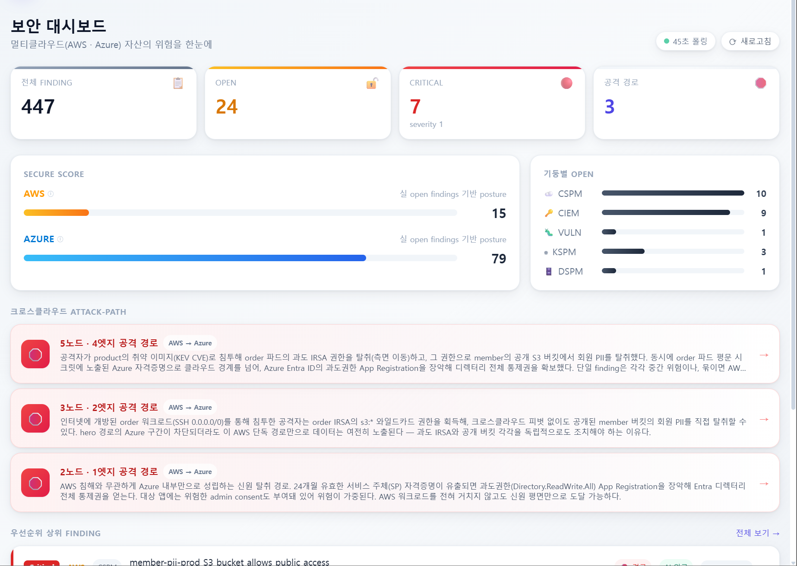
내가 담당한 것
- 이기종 스캐너 출력(ASFF · OCSF · trivy-json 등)을 공통 finding 스키마로 정규화하는 파이프라인
- 워크로드 취약점 스캐너(Trivy · kube-bench) 및 Azure Entra ID CIEM 스캐너
- 크로스클라우드 공격경로 상관 엔진(R1~R5 규칙) 및 내러티브 생성
- Agentic 엔진의 Hypothesis · Reasoning · Orchestrator (조사 루프 전체 지휘)
- RAG 검색(pgvector) 및 Bedrock 기반 설명 생성기
- 운영 관측 전반 — X-Ray 분산 추적(5개 Lambda 전 구간) · Grafana 대시보드 6종(CloudWatch · Prometheus · PostgreSQL · X-Ray 4개 소스 통합) · CloudWatch 알람 · Teams 알림
- GitHub Actions 기반 보안 스캔 자동화(Prowler 정기 스캔 → S3 → 파이프라인 합류)
- Azure / Entra ID 테넌트 구성, App Registration, 키리스 인증(Federated Credential)
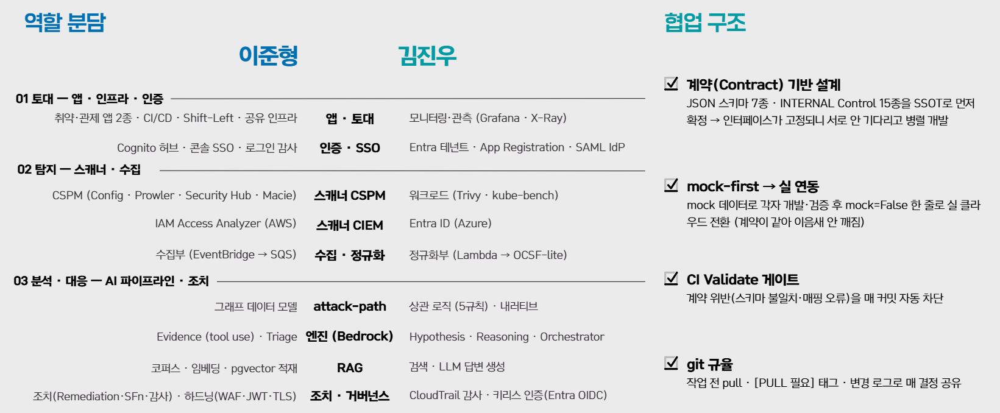
아키텍처
스캐너는 두 계정을 read-only로만 훑고, 결과는 하나의 파이프라인으로 모인다.
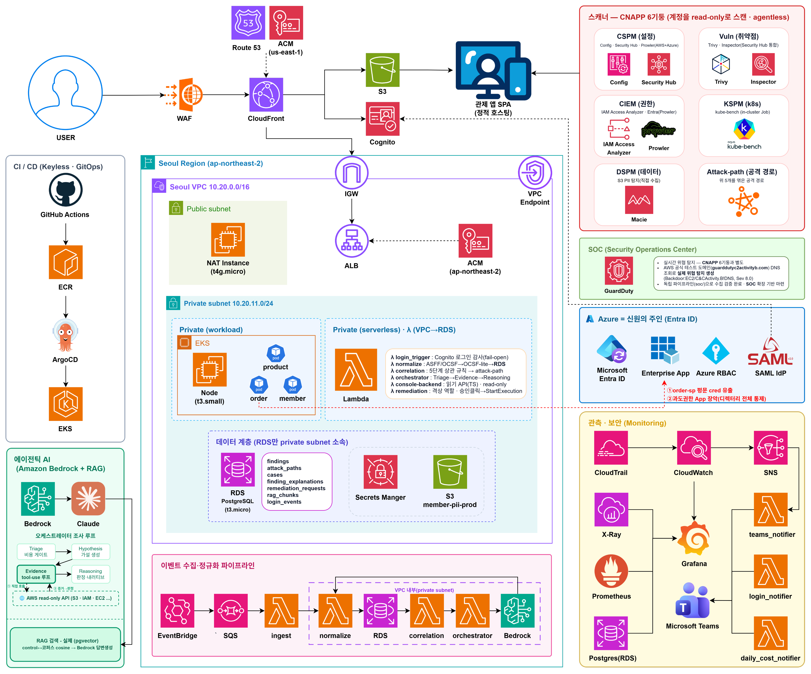
동작 방식
스캔(입력) → EventBridge → SQS → Lambda
→ 정규화 (OCSF-lite)
→ 상관 엔진 (attack-path)
→ Agentic 엔진 (Triage → Hypothesis → Evidence → Reasoning)
→ RDS 저장 → 관제 콘솔 표시정규화 규칙 3종
resource_id 캐논화
ARN·Azure 고유 ID를 cloud:type:native_id 형식으로 통일한다.
표기가 다르면 같은 리소스를 다른 것으로 세게 된다.
dedup_key = resource_id|control_id
같은 리소스에 같은 종류의 문제가 중복되면 finding을 하나로 병합하고,
원본 스캐너 체크 ID는 sources[]에 누적한다.
어떤 스캐너가 감지했는지는 증거로 남기면서 화면에는 1건으로 표시된다.
severity_id 내부 컨벤션 (1=Critical ~ 5=Info)
실제 OCSF는 값이 클수록 심각한데 이와 반대로 잡았다. SEV1/P1 관례에 맞춰 오름차순 정렬만으로 Critical이 자동으로 최상단에 오게 하려고 정규화 단계에서 매핑한다.
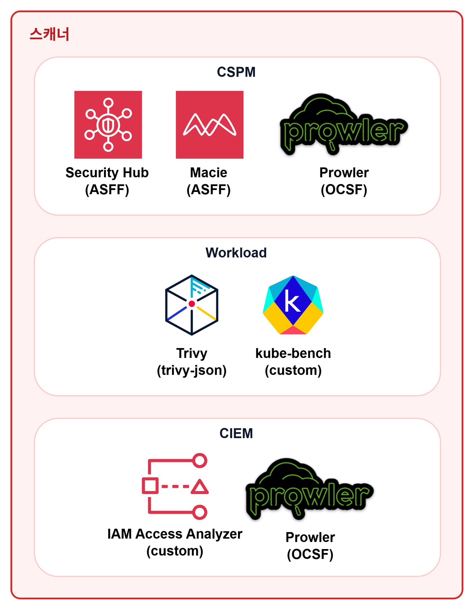
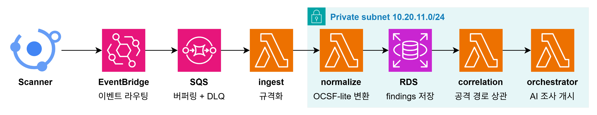
2-pass 이벤트 구동
1차로 정규화·상관분석을 돌려 각 finding에 attack_path_id를 부여하고,
그 완료 이벤트를 EventBridge로 발행해 2차로 Triage·AI 조사(orchestrator)를 깨운다.
폴링이 아니라 이벤트 체인이라 스캔이 들어오는 즉시 자동으로 흐른다.
완전 agentless
- 스캐너가 계정을 read-only로 훑어 결과만 EventBridge로 흘려보낸다. 취약 앱과 관제 앱은 서로 직접 통신하지 않는다
- 감시 대상에 에이전트를 심지 않으므로 침해 표면이 늘지 않는다
- Lambda는 VPC 내부(private subnet)에 배치해 RDS에 접근하고, 실패 메시지는 DLQ로 격리한다
상관 엔진 — attack-path
R1~R5 상관 규칙이 개별 finding을 엮어 공격 경로 그래프를 만든다. 개별로는 중간 위험인 결함도 한 줄로 이어지면 등급이 올라간다.
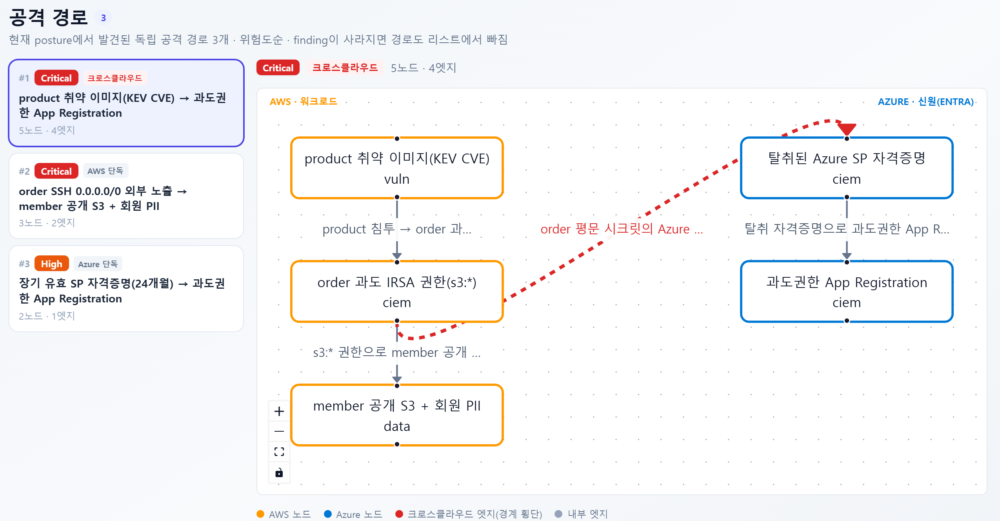
엔진이 이 경로에 붙인 서사는 다음과 같다.
공격자가 product의 취약 이미지(KEV CVE)로 침투해 order 파드의 과도 IRSA 권한을 탈취(측면 이동)하고, 그 권한으로 member의 공개 S3 버킷에서 회원 PII를 탈취했다. 동시에 order 파드 평문 시크릿에 노출된 Azure 자격증명으로 클라우드 경계를 넘어, Azure Entra ID의 과도권한 App Registration을 장악해 디렉터리 전체 통제권을 확보했다. 단일 finding은 각각 중간 위험이나, 묶으면 AWS 워크로드 → Azure 신원을 가로지르는 Critical 탈취 경로가 된다.
공격 서사 (REASONING) — 상관 엔진 생성
에이전틱 엔진 — 4단계 조사 루프
Triage
무엇을 조사할지 고른다. severity_id ≤ 2이거나
공격 경로에 속한 finding만 통과시킨다.
Hypothesis
"이게 실제로 악용 가능한가"에 대한 가설을 세운다.
Evidence
Bedrock(Claude)이 스스로 read-only API를 골라 호출해 실제 클라우드 상태를 확인한다. 챗봇과 갈리는 지점이 여기다.
Reasoning
모은 증거로 CONFIRMED / REFUTED를 판정하고 근거를 서술한다.
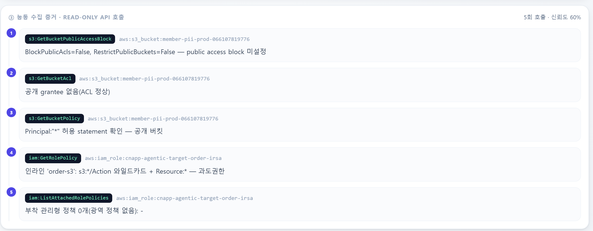
RAG 설명 생성
Titan 임베딩으로 색인한 문서를 pgvector로 유사도 검색한 뒤, Bedrock이 검색된 근거 청크 안에서만 답하게 했다. "왜 위험하고 어떻게 고치나"를 지어내지 않게 하는 장치다.
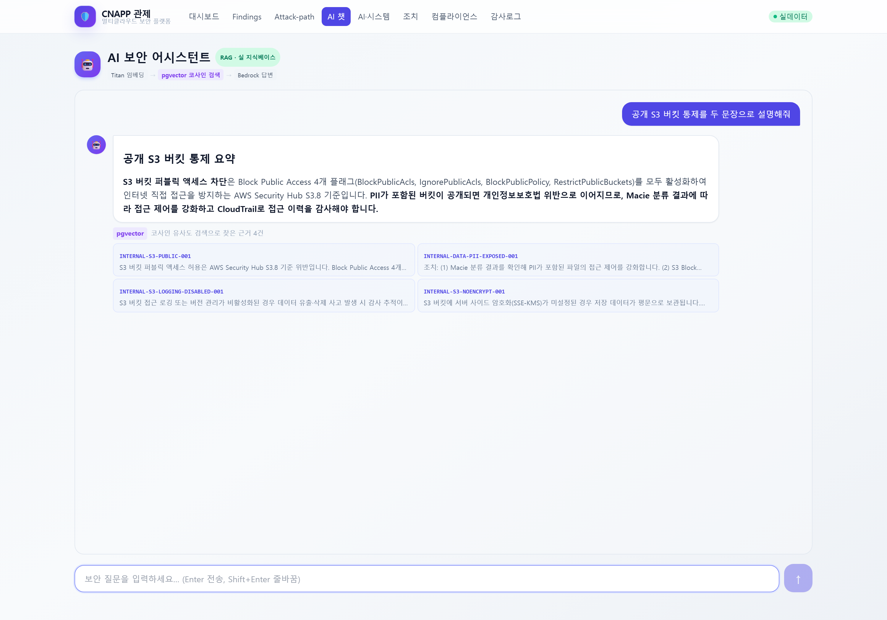
인증 — SSO 3단계
콘솔은 자체 계정을 만들지 않는다. 조직 신원(Entra ID)으로만 들어온다.
Microsoft Entra ID
조직 계정으로 인증한다(IdP).
Amazon Cognito
SAML을 받아 User Pool로 넘기고 custom:groups(GUID)를 매핑한다.
SPA (PKCE)
ID 토큰을 받아 Authorization: Bearer로 백엔드에 붙인다.
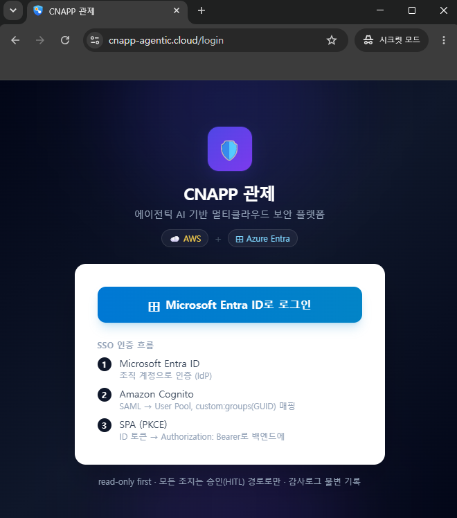
운영 관측
단순 인프라 관측을 넘어, AI 에이전틱 루프 자체를 관측 대상으로 삼았다.
- X-Ray 분산 추적 —
ingest → normalize → correlation → orchestrator전 구간이 하나의 트레이스로 이어진다. AI가 자율적으로 호출한 read-only API까지 같은 화면에 나타난다 - Grafana 6종 대시보드 — CloudWatch(Application · Infra · AI) · X-Ray · Prometheus · PostgreSQL 네 개 데이터소스를 하나로 연결
- 엔진 전용 커스텀 지표 — 엔진 바깥엔 지표가 없어 EMF로 직접 계측했다. Bedrock 토큰을 합산해 AI 판단 1건당 비용을 보고, 호출된 read-only API별 횟수로 조사 행동 패턴을 관측한다
- 알림 — CloudTrail·CloudWatch가 지표를 수집하고 SNS·Lambda가 Teams·이메일로 전송. 채널 3종(Cost · Login · Alerts)
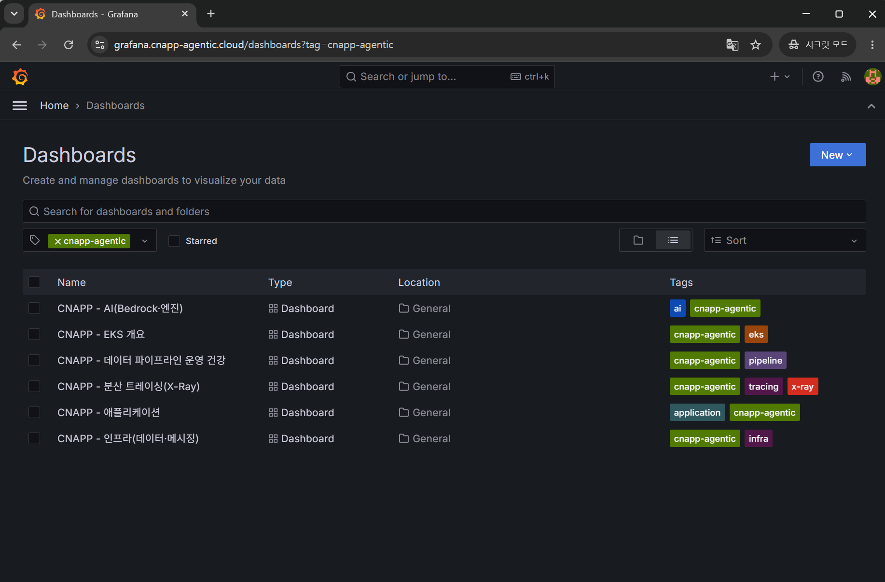
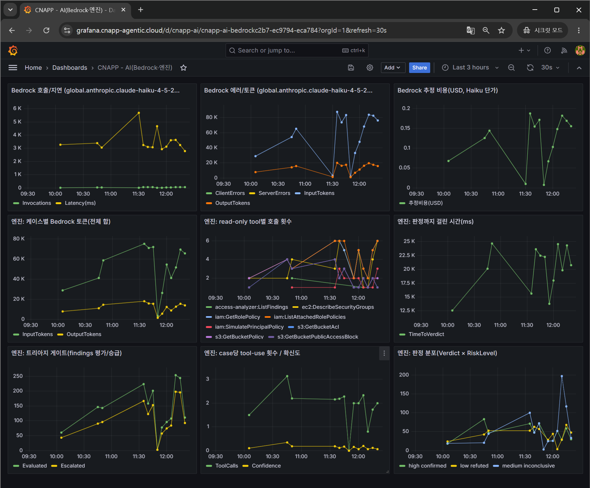
read-only tool별 호출 횟수 패널의
s3:GetBucketPublicAccessBlock이 트러블슈팅 ①에서 고친 바로 그 액션명이다.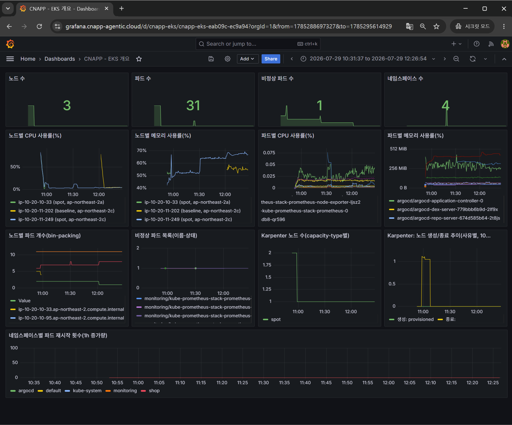
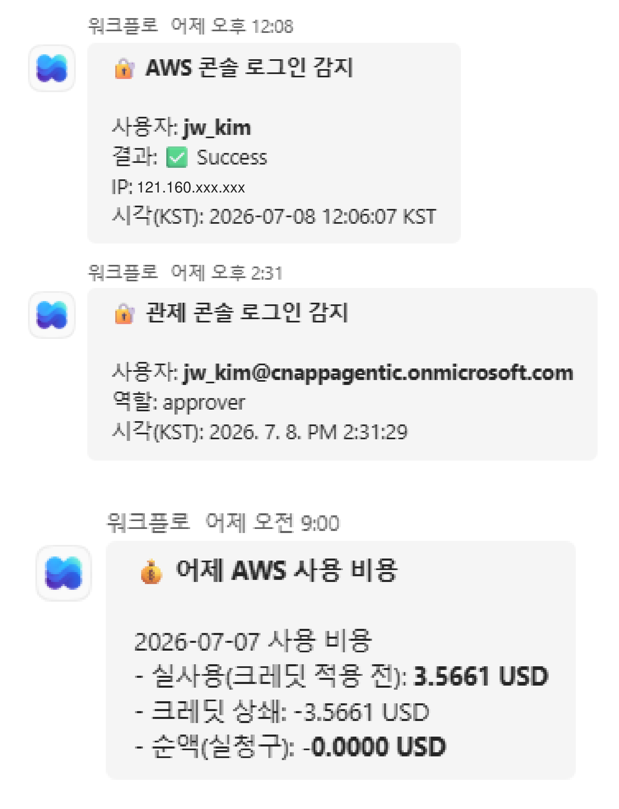
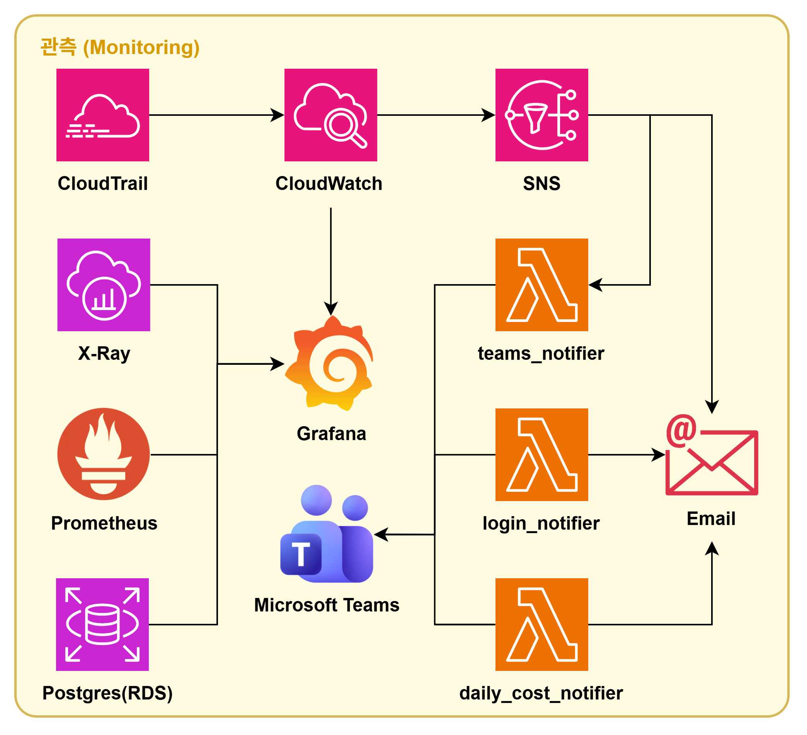
설계에서 고민한 것
왜 계약을 먼저 고정했나
2인이 9개 영역을 동시에 개발하려면 서로의 결과물을 기다리는 순간 병렬성이 깨진다. finding · case · attack-path 등 공통 스키마 7종을 JSON Schema로 먼저 확정하고, 상대 영역은 목업으로 대체하며 각자 진행했다.
CI가 매 PR마다 계약 4-assert와 회귀 10종을 검사해 계약 위반을 병합 전에 차단했다. 결과적으로 합칠 때 인터페이스 마찰이 거의 없었다.
AI에게 얼마나 맡길 것인가 — 비용과 권한의 경계
LLM이 자율적으로 API를 부르면 호출 수와 비용이 예측되지 않는다. 세 곳에서 경계를 잡았다.
- 무엇을 조사할지 — Triage 게이트로
severity_id ≤ 2또는 공격 경로에 속한 finding만 통과 - 무엇을 부를 수 있는지 — read-only API allowlist를 계약에 정의하고 스키마 단계(tool enum)와 실행 직전 두 번 강제
- 얼마나 자주 깨울지 — 실 스캐너를 붙이자 엔진 기동이 시간당 5배로 폭증. 배치 창을 두고 신규 open finding일 때만 깨우도록 수정
세 번째는 저볼륨 시절엔 안 보이다가 실 스캐너를 붙이자마자 드러났다. 조사 대상을 제한하는 것과 엔진을 얼마나 자주 깨우는가는 별개의 축이었다.
어디까지가 이 프로젝트의 범위인가
GuardDuty를 붙여보니 기능적으로는 동작했다. 그런데 세 가지가 어긋났다 — 다른 도구는 전부 정적 스캔인데 GuardDuty만 상시 감시형이고, 6기둥 어디에도 안 맞았고, Findings 탭이 '고치면 사라지는 상태' 모델인데 GuardDuty가 잡는 건 '사건'이었다.
세 문제가 전부 하나의 경계를 가리키고 있었다 — CSPM인가 SOC인가. 만든 걸 전부 되돌리고, 코어와 분리된 독립 폴더에 확장 훅 데모로만 남겼다. '될 수 있다'와 '이 프로젝트에 속한다'는 다른 질문이었다.
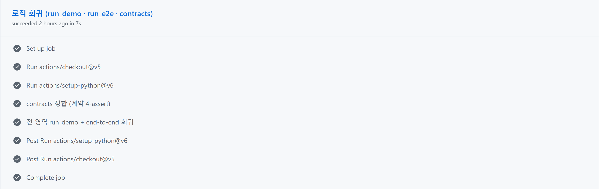
contracts 정합 (계약 4-assert)와 전 영역 run_demo + end-to-end 회귀가 여기서 막히면 병합이 안 된다.트러블슈팅
① 콘솔은 멀쩡한데 X-Ray에는 Error 노드가 5개
- 증상
- 앱이 예외를 중립 결과로 강등해 정상 종료했기 때문에 관제 화면에는 아무 문제도 안 보임
- 원인
- AWS가 요구하는 IAM 액션명(
s3:GetBucketPublicAccessBlock)이 API 오퍼레이션명(s3:GetPublicAccessBlock)과 다름. 이 도구는 구현 이후 한 번도 성공한 적이 없었으나 예외 처리에 가려져 있었음 - 해결
batch-get-traces로 실제 예외를 열어 예상된 실패와 실버그를 분리 → 액션명 6곳 일괄 정정 → IAM 정책 시뮬레이터로 검증- 결과
- AI 조사 확증률 33% → 60%, 판정이 inconclusive → confirmed로 전환
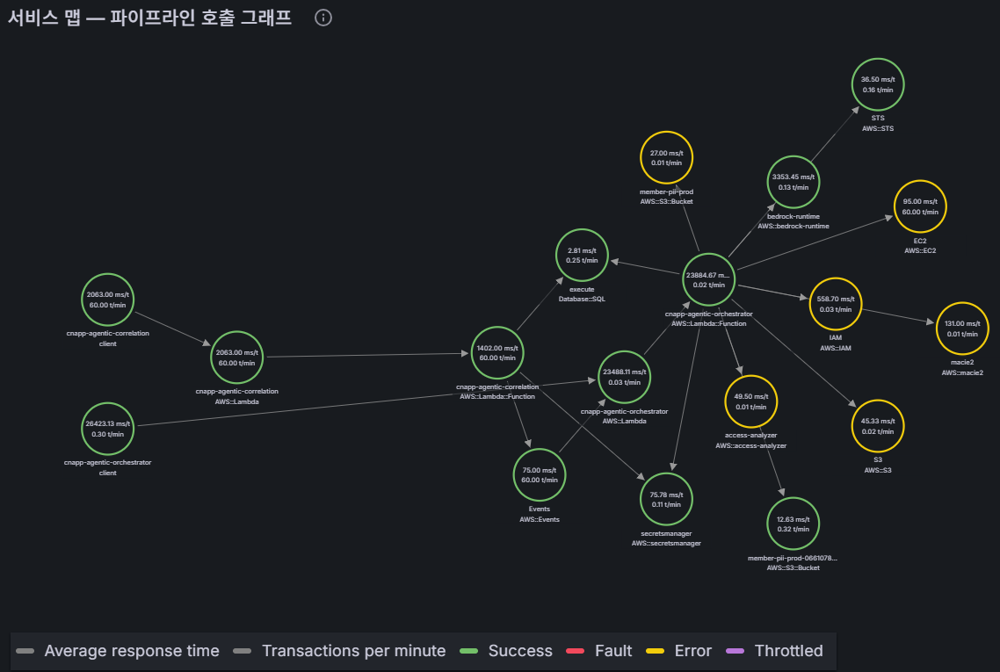
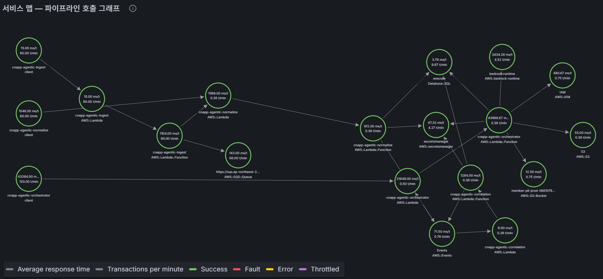
② Inspector finding이 한 건도 안 보임
- 가설
- "EventBridge가 꺼져 있을 것이다"
- 반증
- 규칙 5개 전부 ENABLED, Security Hub에는 이미 273건이 들어와 있었음. 파이프는 열려 있었다
- 원인
- Inspector가 보내는 finding은
ProductFields·Compliance값이 명시적null인데, 파서가 항상 dict라고 가정해 배치 전체가 크래시 - 해결
- None-safety 확보 + 기본 status 교정 → 실 CVE 27건 정상 병합
- 교훈
- 파이프가 열려있다고 데이터가 처리된다는 보장은 없다
③ "Azure 구독 자체가 비정상이라 불가" — 오판을 뒤집음
- 최초 판단
az role assignment가MissingSubscription으로 죽어 구독 문제로 결론, Azure 스캔을 범위에서 제외- 재검증
- 같은 조회를
az rest(raw ARM API)로 치니 정상 작동. 구독은 멀쩡했고 CLI 래퍼 버그였음 - 해결
az rest로 구독 범위 Reader 직접 부여 → Prowler Azure 완주 → 수집·정규화·RDS 전 구간 관통- 교훈
- CLI 특정 명령이 이상하게 실패하면 래퍼 버그와 실 리소스 상태를 구분할 것
RESULT
성과
- 실 스캔 통합
- open 32 · 준수 63 · 노이즈 억제 337
- 스캐너
- Prowler · kube-bench · Trivy · IAM Access Analyzer · Macie · Inspector
- 공격 경로
- 개별 finding을 엮어 도출
- AI 미조사
- Triage 통과 24건 전부 조사 완료
- 완결 루프
- 공개 S3 버킷 조치를 승인하면 관련 공격 경로가 실시간으로 사라진다
432건
6종
3개
0건
3 → 1
설계 → 목업 검증 → 실 클라우드 전환 → 라이브 검증까지 완주. AWS·Azure 실 계정에 전 레이어 배포 후 실 스캔·실 Bedrock 조사·SSO 로그인·HITL 조치 실행까지 확인했다.
산출물
이 화면 크기에서는 미리보기 대신 다운로드로 확인해 주세요.
관제 콘솔 둘러보기
위에서 잘라 쓴 화면들의 전체 모습이다. 탭을 누르면 해당 화면으로 바뀐다.
관제 콘솔
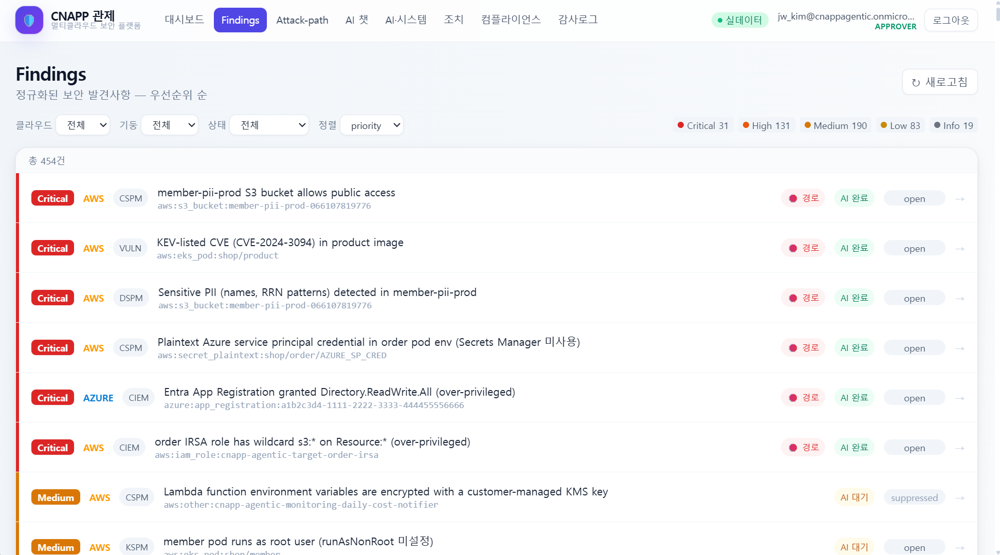
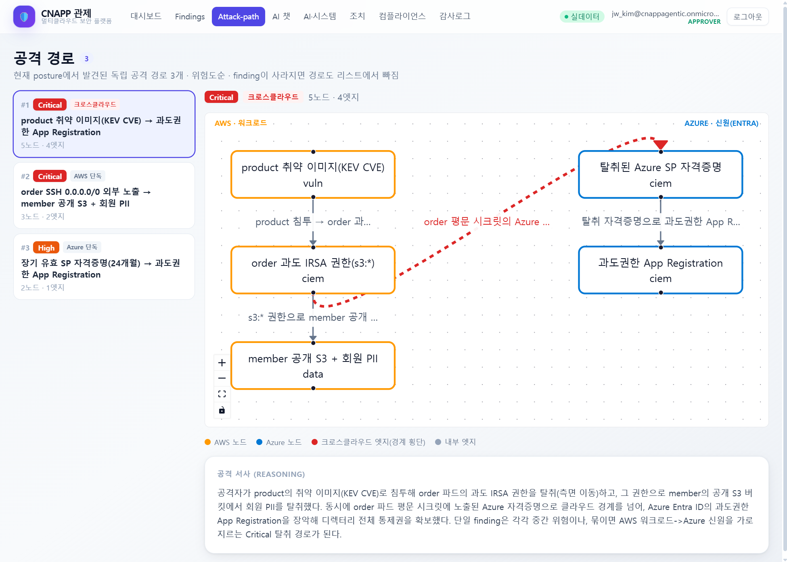
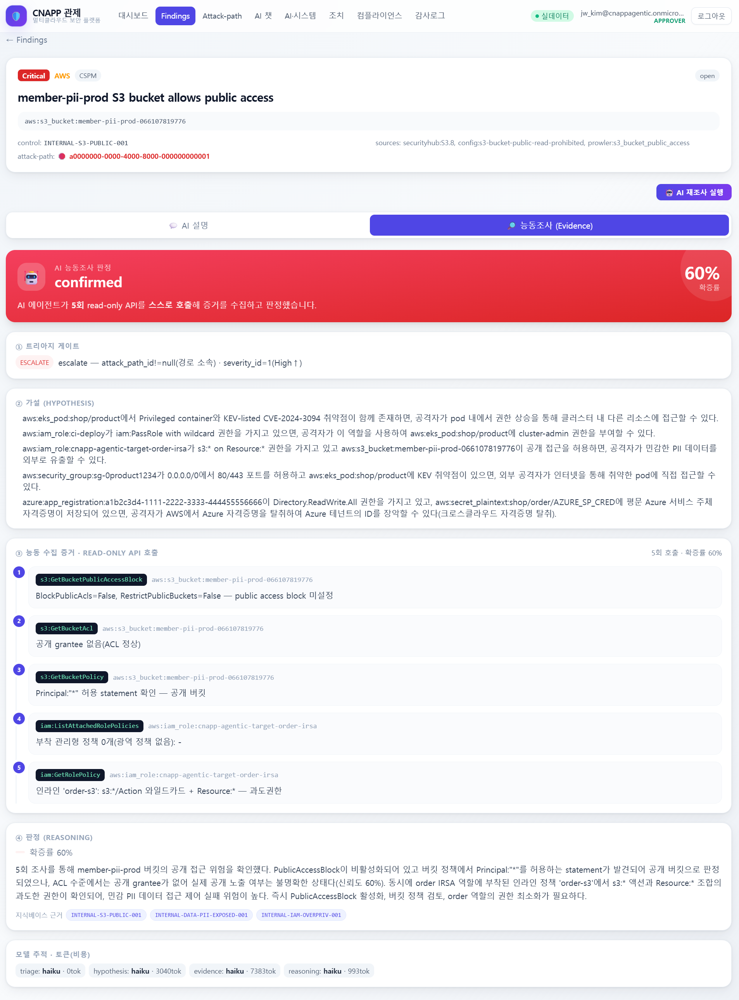
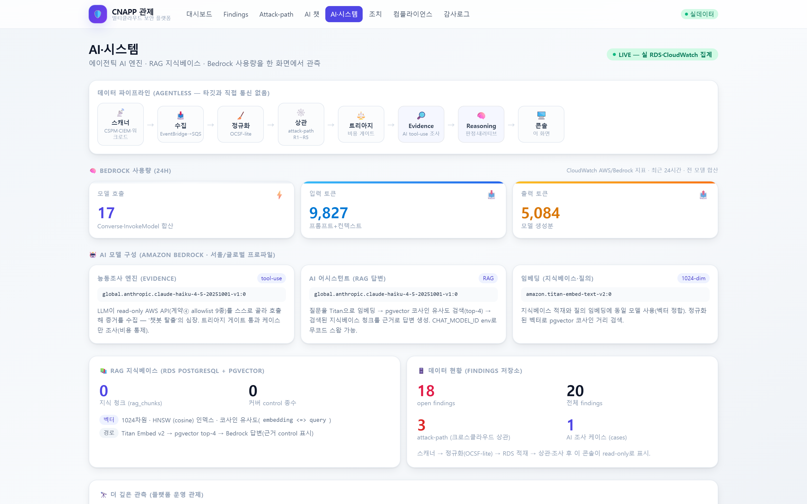
배포 · CI
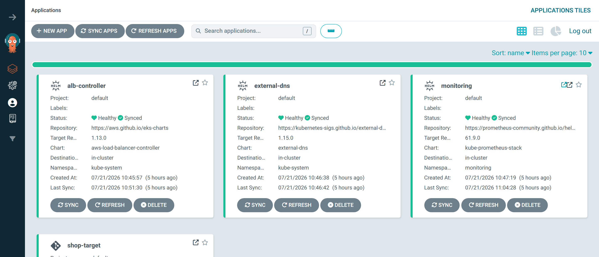
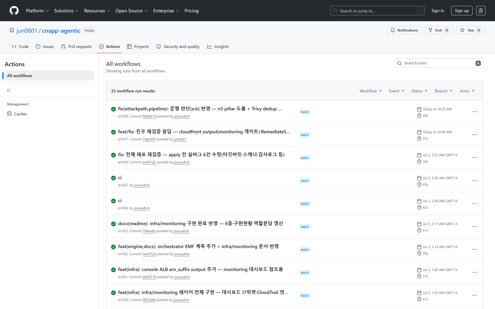
이 기술이 무엇인가
한 문장으로 — 클라우드에 뭐가 잘못 설정돼 있는지 찾아주고, 그게 왜 위험한지 AI가 스스로 조사해 설명하고, 승인하면 고쳐주는 보안 관제 플랫폼이다.
CNAPP이란
Cloud-Native Application Protection Platform. 예전엔 설정 점검(CSPM), 권한 점검(CIEM), 취약점 스캔이 각각 다른 도구였는데 이걸 하나로 묶은 통합 보안 플랫폼이다. 흩어진 신호를 모아 단일 도구로는 못 잡는 위험 조합을 찾는 게 핵심이다.
"에이전틱"의 의미
질문해야 답하는 챗봇이 아니다. AI가 read-only API를 스스로 골라 호출해 실제 클라우드 상태를 조사하고, 가설 → 증거 → 판정 루프로 위험을 추론한다. 챗봇 탈출의 기준은 "LLM이 스스로 API를 불러 증거를 모으는가"다.
왜 멀티클라우드
AWS는 워크로드의 주인, Azure는 신원(Entra ID)의 주인. 각 클라우드의 강점대로 나누고, AWS 워크로드 침해가 Azure 신원 장악으로 번지는 경계를 넘는 공격 경로를 추적한다.
독성 조합
개별로는 "중간 위험"인 결함 여러 개가 한 줄로 이어지면 치명적이 되는 것. 공개 S3 버킷 하나는 중간 위험이지만, 거기에 개인정보가 있고 그 버킷을 쓰는 파드가 과도한 권한까지 가졌다면 Critical이 된다. CNAPP의 존재 이유다.
읽기 전용 스캔
점검 대상 앱에 에이전트를 심지 않는다. 스캐너가 클라우드 계정을 외부에서 read-only로 훑기만 하고, 타깃 앱과 관제 앱은 서로 직접 통신하지 않는다.
사람의 승인
AI는 기본적으로 읽기만 한다. 실제 변경(조치)은 반드시 사람이 승인해야 실행되고, 모든 조치는 수정 불가능한 감사 로그에 남는다. AI에게 무한 권한을 주지 않는 안전장치다.
골든 시나리오 — 크로스클라우드 신원 탈취
개별로는 중간 위험인 결함들이 어떻게 한 줄의 치명적 경로가 되는지 보여주는 데모다.
취약 이미지 침투 — AWS
product 파드의 KEV 등재 CVE 이미지로 최초 침투.
측면 이동 — AWS
과도한 IRSA 권한으로 order 워크로드까지 이동.
자격증명 발견 — AWS
평문 시크릿에서 Azure 자격증명 + 공개 S3의 개인정보를 탈취.
신원 장악 — Azure
탈취한 자격증명으로 Entra ID 과도권한 앱을 장악해 디렉터리 통제권 확보.
왜 중요한가
S3 스캐너만 보면 "공개 버킷 하나", 권한 스캐너만 보면 "과도한 IRSA 하나"로 각각 중간 위험이다. 하지만 같은 그래프에 얹으면 "AWS 워크로드 → Azure 신원 전체 탈취"라는 Critical 경로가 드러난다. 단일 도구가 못 잡고 CNAPP만 잡는 지점이다. (분석·시각화 수준이고, 실제 횡단 익스플로잇은 범위 밖.)
CNAPP 6기둥
CNAPP은 이 6가지 관점의 점검을 하나의 그래프로 묶는다. 각 기둥이 무엇을 보고 어떤 도구를 쓰는지.
설정 점검
S3 · 보안그룹 · IAM · 암호화 등 클라우드 설정이 안전 기준에 맞는지 점검.
권한 점검
과도하거나 미사용인 권한, 권한 상승 경로를 찾는다. AWS IAM + Azure Entra ID 앱.
취약점 관리
컨테이너 이미지·워크로드의 CVE를 스캔하고, 실제 악용되는(KEV) 취약점을 우선순위화.
쿠버네티스 자세
K8s 설정 · Pod Security · RBAC를 CIS 벤치마크 기준으로 점검.
데이터 보안
민감 데이터(개인정보)가 어디에 있고 노출됐는지 탐지. AWS S3 대상.
공격 경로 상관
위 5기둥의 finding을 엮어 독성 조합·공격 경로를 그래프로 도출.
기술 스택 · 용어집
2인 팀 프로젝트의 전체 스택이다. 내 담당 영역을 함께 표기했다.
| 영역 | 기술 | 담당 |
|---|---|---|
| 수집 · 정규화 | EventBridge · SQS(+DLQ) · Lambda · OCSF-lite 정규화 | ● |
| 워크로드 · K8s 스캐너 | Trivy · kube-bench | ● |
| Azure 보안 | Microsoft Entra ID(신원·CIEM) · Prowler entra_* · App Registration · Federated Credential |
● |
| 상관 엔진 | R1~R5 상관 규칙 · attack-path 그래프 · 내러티브 생성 | ● |
| 에이전틱 AI | Amazon Bedrock(Claude Haiku 4.5, Converse tool-use) — Hypothesis · Reasoning · Orchestrator | ● |
| RAG | Titan Embed v2 · pgvector (RDS PostgreSQL 16) | ● |
| 관측 | CloudWatch(24위젯 · 알람 7종) · X-Ray(5 Lambda 전 구간) · Grafana(4소스 · 대시보드 6종) · Teams 알림 | ● |
| 스캔 자동화 | GitHub Actions 정기 스캔 → S3 → 파이프라인 합류 | ● |
| AWS 보안 스캐너 | CloudTrail · Config · Security Hub · Prowler(AWS) · IAM Access Analyzer · Macie · Inspector | ○ |
| 에이전틱 AI (앞단) | Triage 게이트 · Evidence tool-use 실행부 | ○ |
| 관제 앱 (프론트) | Vite · React · TypeScript · TanStack Query · Tailwind · React Flow · Recharts · MSW | ○ |
| 관제 앱 (백엔드) | TypeScript Lambda (ALB → Lambda, read-only API) | ○ |
| 인증 · 거버넌스 | Entra ID(SAML) → Cognito(OIDC/PKCE) → SPA · aws-jwt-verify · S3 Object Lock |
○ |
| 조치 (HITL) | Step Functions 승인 흐름 · 불변 감사 로그 | ○ |
| 타깃 워크로드 · 배포 | EKS · ECR · ArgoCD · Karpenter · IRSA · Terraform(레이어드) | ○ |
용어집
클릭하면 펼쳐진다.
CNAPP Cloud-Native Application Protection Platform
CSPM Cloud Security Posture Management
CIEM Cloud Infrastructure Entitlement Management
KSPM Kubernetes Security Posture Management
DSPM Data Security Posture Management
Attack-path 공격 경로 상관 분석
OCSF Open Cybersecurity Schema Framework
RAG Retrieval-Augmented Generation
Bedrock Amazon Bedrock
HITL Human-in-the-Loop
IRSA IAM Roles for Service Accounts
GitOps Git 기반 배포
kubectl이 필요 없다.